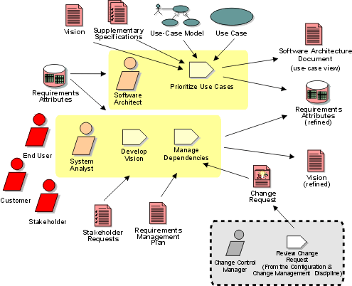

Disciplines >
Disciplines >
 Requirements >
Requirements >
 Workflow >
Manage the Scope of the System
Workflow >
Manage the Scope of the System
Disciplines >
Requirements >
Workflow >
Manage the Scope of the System
Workflow Detail:
|
Topics |
 |
The purpose of this workflow detail is to:
The scope of a project is defined by the set of requirements allocated to it. Managing project scope to fit the available resources (time, people, and money) is key to managing successful projects. Managing scope is a continuous activity that requires iterative or incremental development, which breaks project scope into smaller more manageable pieces.
Using requirement attributes, such as priority, effort, and risk, as the basis for negotiating the inclusion of a requirement is a particularly useful technique for managing scope. Focusing on the attributes rather than the requirements themselves helps desensitize negotiations that are otherwise contentious.
It is also helpful for team leaders to be trained in negotiation skills and for the project to have a champion in the organization, as well as on the customer side. Product/project champions should have the organizational power to refuse scope changes beyond the available resources or to expand resources to accommodate additional scope.
Project scope should be managed continuously throughout the project. A better understanding of system functionality is obtained from identifying most actors and use cases. Non-functional requirements, which do not fit in the use-case model, should be documented in the Supplementary Specifications. The system analyst should determine values of priority, effort, cost, risk values etc., from the appropriate stakeholders, to collect in the repository of requirements attributes. These will be used by the Project Manager in planning the iterations and enables the software architect to identify the architecturally significant use cases, defining the use-case view of the architecture in the Software Architecture Document.
The people involved in this workflow detail should all be members of the architecture team.
The architecture team will lead a session to discuss how to best prioritize the requirements.
See also:
|
Rational Unified
Process
|